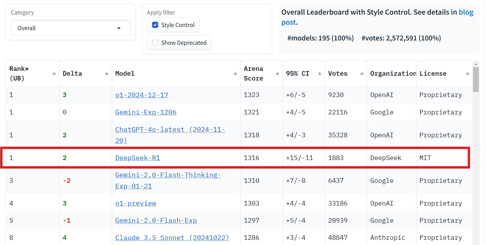
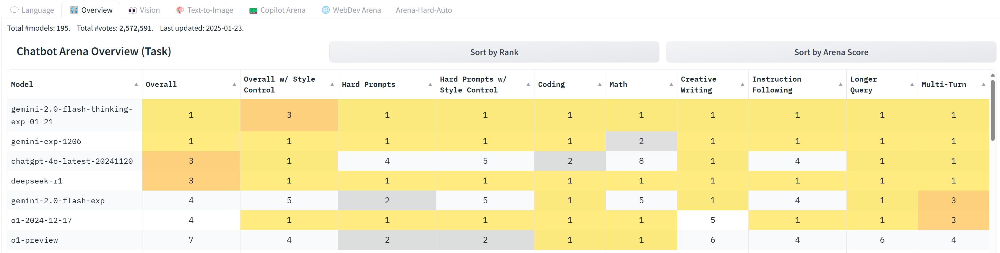

DeepSeek-R1: Incentivizing Reasoning Capability in LLMs via Reinforcement Learning
一句话总结:跳过 SFT,直接在 DeepSeek-V3-Base 上用 GRPO + 纯 rule-based reward(accuracy + format)做大规模 RL,就能涌现出 self-reflection / verification / long CoT(R1-Zero);再用"几千条 cold-start CoT SFT → 推理 RL → 拒采 SFT(含通用数据)→ 全场景 RL"四阶段把它打磨成 R1,并蒸馏到 Qwen / Llama 1.5B–70B,小模型 reasoning 全面超 GPT-4o / Claude-3.5。
🎯 面试考点(高频):
-
R1-Zero 训练流程(必默写):
DeepSeek-V3-Base+GRPO+ 仅Reward = Reward_acc + Reward_format(数学答案放\boxed{}验证、代码跑 compiler、CoT 必须包在<think>…</think>内)。完全不做 SFT,batch 512(每步 32 道题 × 16 rollouts),max len 32k → 8.2k 步后扩到 65k;训练 10,400 步 ≈ 1.6 epoch;AIME pass@1 从 15.6% → 77.9%,cons@16 达 86.7%(超过人类参赛者平均)。 - GRPO 公式(必默写):抛弃 PPO 的 value/critic,对每个 prompt 采样一组 $G$ 个 rollouts,用组内相对奖励当 advantage: $$A_i = \frac{r_i - \mathrm{mean}(\{r_1,\dots,r_G\})}{\mathrm{std}(\{r_1,\dots,r_G\})}$$ $$\mathcal{J}_{\text{GRPO}}(\theta) = \mathbb{E}\!\left[\tfrac{1}{G}\!\sum_{i=1}^{G}\!\min\!\Bigl(\tfrac{\pi_\theta(o_i|q)}{\pi_{\theta_{\mathrm{old}}}(o_i|q)}A_i,\;\mathrm{clip}\bigl(\tfrac{\pi_\theta(o_i|q)}{\pi_{\theta_{\mathrm{old}}}(o_i|q)},1{-}\varepsilon,1{+}\varepsilon\bigr)A_i\Bigr) - \beta\,\mathbb{D}_{KL}(\pi_\theta\|\pi_{\mathrm{ref}})\right]$$ 内部 KL 用无偏估计 $\frac{\pi_{\mathrm{ref}}}{\pi_\theta}-\log\frac{\pi_{\mathrm{ref}}}{\pi_\theta}-1$。省一份 value model → 显存/算力对半。R1 把 clip $\varepsilon$ 调到 10(大 clip)以避免梯度被截断、容许大步长更新——这是把 GRPO 拉到性能上限的关键 trick。
- Rule-based vs 神经 RM:作者明确拒绝在 reasoning RL 中使用 outcome-PRM / process-PRM——因为(i)神经 RM 在大规模 RL 下必被 reward hacking,(ii)需要额外算力维护、(iii)PRM 还要定义 fine-grain step,标注极难规模化。只用 rule(数学答案/编译/格式)→ 反馈精确、无 hacking 风险。
-
R1 四阶段 pipeline(必背):
① Cold-start SFT:几千条人类对齐的对话式 long-CoT 数据微调 V3-Base → Dev1(解决 R1-Zero 可读性差 / 中英混杂);
② Reasoning-oriented RL:仍用 rule-based reward,再加
Reward_language(目标语种 token 占比,缓解 lang mixing,代价是略降 reasoning)→ Dev2; ③ 拒采 + SFT:从 Dev2 拒采推理样本 + DeepSeek-V3 的非推理 SFT 数据混训 → Dev3,补齐写作 / 通用能力; ④ 全场景 RL:reasoning 用 rule reward,general 用 helpful RM(pairwise,66k 对)+ safety RM(pointwise,106k 条),再叠加 language reward;preference reward 只在最后 400 / 1700 步加入,防止 reward hacking。温度从 1.0 → 0.7。AlpacaEval2 +25%、ArenaHard +17%,Codeforces Rating 2029(超 96.3% 人类)。 - "Aha moment"现象:训练中期 R1-Zero 的 CoT 里突然大量出现"Wait, wait. Wait. That's an aha moment I can flag here.""Let me reevaluate this step-by-step"等拟人化反思短语,平均 response length 从 ~数百 token 单调上升到接近 20k tokens——没人教过它要反思,长 CoT 是被 outcome reward 自然激励出来的。这是论文最具传播力的 finding。
- 蒸馏 to 小模型:R1 生成 800k 样本 → 对 Qwen-1.5B/7B/14B/32B、Llama-8B/70B仅做 SFT 不做 RL。R1-Distill-Qwen-32B AIME pass@1 = 72.6,远超在同基模上跑 10k 步 RL 得到的 Qwen2.5-32B-Zero(47.0)。结论:对小模型,"从强 teacher 蒸馏" >> "自己跑 RL",且省巨量算力——这是 reasoning democratization 的关键路径。
- 失败尝试(高频考点): (a) PRM(Process Reward Model)——三大坑:reasoning step 难严格切分;step 对错难自动判断;model-based PRM 必被 reward hack。结论:PRM 适合 rerank top-N / 引导 search,但不适合作大规模 RL 的训练信号。 (b) MCTS——token 空间指数级远比围棋大,设节点扩展上限 → 易陷局部最优;且 fine-grain value model 极难训。结论:MCTS 配训好的 value model 可在推理期增益,但自搜自学那一套(AlphaGo-style)在 LLM 上跑不通。
- GRPO vs PPO 对比:论文 Figure 3 在同 prompt 集上比较,GRPO 全程 dominate PPO(λ=0.95) 与 PPO(λ=1.0),accuracy 高 ~3-5 pp 且更稳。优势:省 value model、组内归一让 advantage 天然标准化、对稀疏 0/1 reward 更稳。注意:GRPO 对 group size $G$、clip $\varepsilon$ 较敏感(R1 用 $G=16$、$\varepsilon=10$)。
- Preamblep.1
- Abstract / 摘要p.1
- §1 Introduction / 引言p.1
- §2 DeepSeek-R1-Zero / 纯 RL on Basep.2
- §3 DeepSeek-R1 / 多阶段 pipelinep.6
- §4 Experiment / 实验p.8
- §5–6 Safety + Conclusion / 安全与结论p.10
- 附录 A·背景 + GRPO vs PPOp.13
- 附录 F·Distillation 到小模型p.60
- 附录 G·Discussion + Unsuccessful Attempts(PRM / MCTS)p.62
- Referencesp.79
🖼 图表速览 (3 张) · 点击放大

① 图说明:附录 A.3 的 GRPO vs PPO 训练曲线——同一基模(DeepSeek-Coder-V2-Lite)、同一 MATH 任务,横轴 RL 训练 Steps(0–2500),纵轴验证 Accuracy(0.42–0.56)。三条线:深蓝圆 = PPO($\lambda=0.95$)、浅蓝方块 = PPO($\lambda=1.0$)、绿菱形 = GRPO。
② 关键数据:三条线均从 ~0.44 起步,但整段曲线 GRPO 始终在最上方。读到 2400 步:GRPO ≈ 0.554,PPO($\lambda=1.0$)≈ 0.535,PPO($\lambda=0.95$)只到 ~0.501。GRPO 与 PPO($\lambda=0.95$)之间的 gap 稳定在 +4~5 pp;PPO($\lambda=1.0$)由于近似 Monte-Carlo,比 $\lambda=0.95$ 强约 +3 pp,但始终被 GRPO 压住。
③ 启示:(i) 在稀疏 0/1 outcome reward 下,PPO 的 value/critic 难学准,GAE 反而引入偏差;GRPO 用组内相对奖励当 advantage,完全绕开 value model——省一份模型显存,且规避 critic 学不准的不稳定。(ii) PPO 默认的 $\lambda=0.95$ 是性能陷阱,实际需要调到 1.0(MC-style)才接近 GRPO,但仍被 dominated。(iii) GRPO 的样本效率优势在前 1000 步就显现 → 工业实战大规模 reasoning RL 的默认选择;这也是 R1 / Kimi-1.5 / DAPO 等后续工作都选 GRPO 系的核心动机。

① 图说明:Chatbot Arena Overall 排行榜截图(2025-01-23 数据,#models=195,#votes ≈ 257 万),开启 Style Control 后的总榜。红框标出 DeepSeek-R1 并列 Rank 1,Arena Score = 1316,95% CI = +15/−11,投票数 1883,license MIT(完全开源可商用)。
② 关键数据:同处 Rank 1 的还有 OpenAI o1-2024-12-17(1323)、Gemini-Exp-1206(1321)、ChatGPT-4o-latest(1318)——R1 与这三者分数差距 ≤ 7 分,落在 CI 之内,统计意义上不可分辨。Gemini-2.0-Flash-Thinking(1310)、o1-preview(1303)、Gemini-2.0-Flash-Exp(1297)被甩在后面;Claude-3.5-Sonnet-1022(1286)排第 7。
③ 启示:(i) R1 是首个开源 MIT 模型登顶 Arena,与三家最强闭源模型并列;(ii) 在开启 Style Control(剥离回复长度 / Markdown 等风格因素)的口径下仍能并列第一,说明胜出不是靠"长答 + 排版好看"这种风格红利;(iii) 印证论文核心论点——纯 RL 激励的 reasoning 能在 chatbot arena 这种偏对话偏感知质量的赛道上,也照样赢过用海量 SFT + RLHF 的同行,reasoning 强度对用户感知质量是正贡献。

① 图说明:Chatbot Arena 的分类排行截图——把 Overall 拆成 Overall w/ Style Control / Hard Prompts / Hard Prompts w/ Style / Coding / Math / Creative Writing / Instruction Following / Longer Query / Multi-Turn 共 9 个子赛道,每行一个模型,单元格里写各赛道的 rank。
② 关键数据:DeepSeek-R1 在 7/9 个细分赛道上排名 1(包括 Hard Prompts、Coding、Math、Creative Writing、Instruction Following、Longer Query 等强项),Overall=3、Overall w/Style=1。对比:gemini-2.0-flash-thinking-exp-01-21 Overall=1 但 Style Control 后掉到 3;chatgpt-4o-latest 在 Math 上 rank=8 明显短板;o1-preview 在 Multi-Turn 上 rank=6,落后 R1。
③ 启示:(i) R1 不是只会刷数学题——在 Creative Writing / Instruction Following / Multi-Turn 这些"通用对话感"赛道上同样并列第一,验证四阶段 pipeline 第 3、4 阶段加入的非推理 SFT + 偏好 RL 的必要性(R1-Zero 单靠 reasoning RL 在 AlpacaEval 上只有 24.7,R1 拉到 87.6,+25 pp);(ii) Style Control 维持 rank=1 进一步说明提升不是来自冗长回复,而是真实质量;(iii) 工程教训:即使核心卖点是 reasoning,通用对话能力也必须靠多阶段后训练把齐(尤其拒采 SFT + preference RM 那一步)。
📖 论文正文(双语逐段对照)
Preamblep.1
DeepSeek-R1: Incentivizing Reasoning Capability in LLMs via Reinforcement Learning · DeepSeek-AI · research@deepseek.com
Abstract / 摘要p.1
General reasoning represents a long-standing and formidable challenge in artificial intelligence. Recent breakthroughs, exemplified by large language models (LLMs) and chain-of-thought prompting, have achieved considerable success on foundational reasoning tasks. However, this success is heavily contingent upon extensive human-annotated demonstrations, and models' capabilities are still insufficient for more complex problems. Here we show that the reasoning abilities of LLMs can be incentivized through pure reinforcement learning (RL), obviating the need for human-labeled reasoning trajectories. The proposed RL framework facilitates the emergent development of advanced reasoning patterns, such as self-reflection, verification, and dynamic strategy adaptation. Consequently, the trained model achieves superior performance on verifiable tasks such as mathematics, coding competitions, and STEM fields, surpassing its counterparts trained via conventional supervised learning on human demonstrations. Moreover, the emergent reasoning patterns exhibited by these large-scale models can be systematically harnessed to guide and enhance the reasoning capabilities of smaller models.
通用推理是人工智能领域长期且艰巨的挑战。近期的突破——以大语言模型(LLM)与思维链(CoT)提示为代表——在基础推理任务上取得了显著成功。然而,这一成功严重依赖大量的人工标注示范,模型在更复杂的问题上能力仍然不足。本文表明:LLM 的推理能力可以通过纯强化学习(RL)来激励出来,从而摆脱对人工标注推理轨迹的依赖。我们提出的 RL 框架推动了高级推理模式的涌现——例如自我反思、验证、动态策略调整。由此训练得到的模型在数学、编程竞赛、STEM 等可验证任务上取得了优于"在人类示范上做传统监督学习"的同类模型的表现。此外,这些大模型展现出的涌现推理模式还可以被系统性地利用,以引导和增强更小模型的推理能力。
§1 Introduction / 引言p.1
Reasoning capability, the cornerstone of human intelligence, enables complex cognitive tasks ranging from mathematical problem-solving to logical deduction and programming. Recent advances in artificial intelligence have demonstrated that large language models (LLMs) can exhibit emergent behaviors, including reasoning abilities, when scaled to a sufficient size. However, achieving such capabilities in pre-training typically demands substantial computational resources. In parallel, a complementary line of research has demonstrated that large language models can be effectively augmented through chain-of-thought (CoT) prompting—either via carefully designed few-shot examples or minimalistic prompts such as "Let's think step by step"—enabling models to produce intermediate reasoning steps, thereby substantially enhancing their performance on complex tasks.
推理能力是人类智能的基石,支撑着从数学问题求解到逻辑推断、编程等各种复杂的认知任务。AI 的最近进展表明,大语言模型(LLM)在规模足够大时会展现出包括推理能力在内的涌现行为。但在预训练阶段达到这种能力通常需要巨量算力。与此并行,另一条互补的工作路线展示出 LLM 可以通过思维链(CoT)提示显著增强——无论是精心设计的 few-shot 示例,还是 "Let's think step by step" 这样的极简提示,都能让模型产生中间推理步骤,从而在复杂任务上显著提升表现。
Despite their effectiveness, these approaches exhibit notable limitations. Their dependence on human-annotated reasoning traces hinders scalability and introduces cognitive biases. Furthermore, by constraining models to replicate human thought processes, their performance is inherently capped by the human-provided exemplars, which prevents the exploration of superior, non-human-like reasoning pathways. To tackle these issues, we aim to explore the potential of LLMs for developing reasoning abilities through self-evolution in an RL framework, with minimal reliance on human labeling efforts. Specifically, we build upon DeepSeek-V3-Base and employ Group Relative Policy Optimization (GRPO) as our RL framework. The reward signal is solely based on the correctness of final predictions against ground-truth answers, without imposing constraints on the reasoning process itself. Notably, we bypass the conventional supervised fine-tuning (SFT) phase before RL training.
尽管这些方法有效,它们也存在明显局限。其对人工标注推理轨迹的依赖阻碍了规模化扩展,并引入认知偏差;同时,把模型约束到"复刻人类思维过程"会让性能被人类示范的上限锁死,无法探索更优的、非人类风格的推理路径。为了解决这些问题,我们试图在 RL 框架下、以最少的人工标注探索 LLM 通过自演化发展推理能力的潜力。具体来说,我们在 DeepSeek-V3-Base 之上,采用 Group Relative Policy Optimization(GRPO) 作为 RL 框架。奖励信号仅来自最终预测与真实答案的对比,对推理过程本身不施加任何约束。值得注意的是,我们跳过了 RL 之前传统的监督微调(SFT)阶段。
Through this process (detailed in Section 2), our model—referred to as DeepSeek-R1-Zero—naturally developed diverse and sophisticated reasoning behaviors. In solving reasoning problems, the model exhibits a tendency to generate longer responses, incorporating verification, reflection, and the exploration of alternative approaches within each response. Although we do not explicitly teach the model how to reason, it successfully learns improved reasoning strategies through reinforcement learning. However, DeepSeek-R1-Zero faces challenges such as poor readability and language mixing, occasionally combining English and Chinese within a single chain-of-thought response. Furthermore, the rule-based RL training stage is narrowly focused on reasoning tasks, resulting in limited performance in broader areas such as writing and open-domain question answering.
通过这一过程(详见第 2 节),我们的模型——记作 DeepSeek-R1-Zero——自然涌现出多样且复杂的推理行为:解答推理题时倾向于生成更长的响应,在单条响应中包含验证、反思与对替代解法的探索。虽然我们没有显式教过模型如何推理,它仍通过 RL 学会了更好的推理策略。然而,R1-Zero 存在可读性差与中英文混杂等问题(有时在一条 CoT 中混用英文与中文)。此外,纯 rule-based 的 RL 阶段仅聚焦推理任务,因此在写作、开放域问答等更广泛领域的表现有限。
To address these challenges, we introduce DeepSeek-R1, a model trained through a multi-stage learning framework that integrates rejection sampling, reinforcement learning, and supervised fine-tuning (detailed in Section 3). This training pipeline enables DeepSeek-R1 to inherit the reasoning capabilities of its predecessor, DeepSeek-R1-Zero, while aligning model behavior with human preferences through additional non-reasoning data. To enable broader access to powerful AI at a lower energy cost, we have distilled several smaller models and made them publicly available. These distilled models exhibit strong reasoning capabilities, surpassing the performance of their original instruction-tuned counterparts. We release DeepSeek-R1 series models to the public at https://huggingface.co/deepseek-ai.
为了解决这些挑战,我们提出 DeepSeek-R1——一个通过多阶段训练框架(融合拒绝采样、强化学习与监督微调,详见第 3 节)训练得到的模型。该训练管线使 R1 既继承了 R1-Zero 的推理能力,又通过额外的非推理数据使模型行为与人类偏好对齐。为了以更低能耗让更多人用上强大的 AI,我们还蒸馏了若干小模型并开源:这些蒸馏模型展现出强大的推理能力,超过它们对应的原始 instruction-tuned 版本。所有 DeepSeek-R1 系列模型在 https://huggingface.co/deepseek-ai 公开发布。
§2 DeepSeek-R1-Zero / 纯 RL on Basep.2
GRPO is the reinforcement learning algorithm that we adopt to train DeepSeek-R1-Zero and DeepSeek-R1. It was originally proposed to simplify the training process and reduce the resource consumption of Proximal Policy Optimization (PPO), which is widely used in the RL stage of LLMs. For each question $q$, GRPO samples a group of outputs $\{o_1, o_2, \ldots, o_G\}$ from the old policy $\pi_{\theta_\mathrm{old}}$ and then optimizes the policy model $\pi_\theta$ by maximizing the following objective:
where $\pi_\mathrm{ref}$ is a reference policy, $\varepsilon$ and $\beta$ are hyper-parameters, and $A_i$ is the advantage, computed using a group of rewards $\{r_1,\ldots,r_G\}$ corresponding to the outputs within each group:
GRPO 是我们用于训练 R1-Zero 与 R1 的强化学习算法。它的提出动机是简化训练流程、降低 PPO 的资源开销——PPO 在 LLM 的 RL 阶段被广泛使用。对每个问题 $q$,GRPO 从旧策略 $\pi_{\theta_\mathrm{old}}$ 采样一组输出 $\{o_1, o_2, \ldots, o_G\}$,然后通过最大化以下目标来优化策略 $\pi_\theta$:见公式 (1)。其中内部 KL 散度用无偏估计(Schulman 2020)给出,见公式 (2);$\pi_\mathrm{ref}$ 是参考策略,$\varepsilon$、$\beta$ 是超参数;$A_i$ 是 advantage,用组内奖励 $\{r_1,\ldots,r_G\}$ 归一化得到,见公式 (3)。
核心 trick:用组内相对奖励替代 value/critic 模型——这砍掉了一份与策略模型同等大小的 value model,显存/算力对半。
To train DeepSeek-R1-Zero, we set the learning rate to 3e-6, the KL coefficient to 0.001, and the sampling temperature to 1 for rollout. For each question, we sample 16 outputs with a maximum length of 32,768 tokens before the 8.2k step and 65,536 tokens afterward. As a result, both the performance and response length of DeepSeek-R1-Zero exhibit a significant jump at the 8.2k step, with training continuing for a total of 10,400 steps, corresponding to 1.6 training epochs. Each training step consists of 32 unique questions, resulting in a training batch size of 512. Every 400 steps, we replace the reference model with the latest policy model. To accelerate training, each rollout generates 8,192 outputs, which are randomly split into 16 mini-batches and trained for only a single inner epoch.
训练 R1-Zero 时,我们设学习率 $3\!\times\!10^{-6}$、KL 系数 $0.001$、rollout 采样温度 $1$。对每道题采样 $G=16$ 条输出,最大长度在 8.2k 步前为 32,768 tokens,之后扩到 65,536 tokens。因此 R1-Zero 的性能与响应长度在 8.2k 步出现显著台阶,整个训练共 10,400 步 ≈ 1.6 epoch。每步 32 道题、batch size = $32\!\times\!16 = 512$。每 400 步把参考模型更新为最新策略。为加速训练,每次 rollout 生成 8,192 条输出,随机切成 16 个 mini-batch,只跑 1 个 inner epoch。
The reward is the source of the training signal, which decides the direction of RL optimization. For DeepSeek-R1-Zero, we employ rule-based rewards in mathematical, coding, and logical reasoning domains. Our rule-based reward system mainly consists of two types: accuracy rewards and format rewards. Accuracy rewards evaluate whether the response is correct: for math problems with deterministic results, the model is required to provide the final answer in a specified format (e.g., within a \boxed{}), enabling reliable rule-based verification of correctness; for code competition prompts, a compiler can be utilized to evaluate the model's responses against a suite of predefined test cases. Format rewards complement the accuracy reward by enforcing the model to encapsulate its reasoning process within designated tags <think>…</think>.
Notably, we abstain from applying neural reward models—whether outcome-based or process-based—to reasoning tasks. This decision is predicated on our observation that neural reward models are susceptible to reward hacking during large-scale reinforcement learning. Moreover, retraining such models necessitates substantial computational resources and introduces additional complexity into the training pipeline.
奖励是训练信号的来源,决定 RL 优化的方向。对 R1-Zero,我们在数学/代码/逻辑推理领域使用基于规则的奖励,主要由两部分组成:准确率奖励 + 格式奖励。准确率奖励:对结果确定的数学题,要求最终答案放进 \boxed{} 内,这样可以用规则可靠地验证对错;对代码竞赛题,可以用编译器在预定义测试用例上评估模型答案。格式奖励:要求模型必须把推理过程包在 <think>…</think> 标签内,与准确率奖励同等权重相加(公式 (4))。
值得注意的是:我们明确拒绝在推理任务上使用任何神经奖励模型(无论 outcome-based 还是 process-based)。理由是——神经 RM 在大规模 RL 下不可避免会被 reward hacking;此外,重新训练神经 RM 需要额外算力,也会让训练流水线更复杂。
We apply the RL technique on the DeepSeek-V3 base to train DeepSeek-R1-Zero. We design a straightforward template requiring DeepSeek-R1-Zero to first produce a reasoning process, then the final answer. We intentionally limit our constraints to this structural format, avoiding any content-specific biases to ensure that we can accurately observe the model's natural progression during the RL process. Figure 1(a) depicts the performance trajectory of DeepSeek-R1-Zero on the AIME 2024 benchmark throughout the RL training process, where the average pass@1 score on AIME 2024 shows a significant increase, jumping from an initial 15.6% to 77.9%. By leveraging self-consistency decoding, the model's performance can be further improved, achieving an accuracy of 86.7%—significantly surpassing the average performance across all human competitors.
我们直接在 DeepSeek-V3-Base 上应用 RL 训练得到 R1-Zero。我们设计了一个非常简洁的模板,只要求模型先输出推理过程、再给最终答案。我们有意把约束限制在"结构格式"上,不加任何与内容相关的偏置,这样才能纯净地观察模型在 RL 过程中的自然演化。Figure 1(a) 展示 R1-Zero 在 AIME 2024 上的训练曲线:pass@1 从 15.6% 单调上升到 77.9%,通过 self-consistency 解码进一步推到 86.7%——显著超过 AIME 人类参赛者平均水平。除了数学竞赛,R1-Zero 在编程竞赛与研究生水平的生物/物理/化学题上也表现强劲(见 Figure 10)。
The self-evolution of DeepSeek-R1-Zero exemplifies how RL can autonomously enhance a model's reasoning capabilities. As shown in Figure 1(b), DeepSeek-R1-Zero exhibits a steady increase in thinking time throughout training, driven solely by intrinsic adaptation rather than external modifications. Leveraging long CoT, the model progressively refines its reasoning, generating hundreds to thousands of tokens. Notably, during training, DeepSeek-R1-Zero exhibits an "aha moment" (Table 2), characterized by a sudden increase in the use of phrases such as "Wait, wait. Wait. That's an aha moment I can flag here." This moment marks a distinct change in reasoning patterns. The self-evolution of DeepSeek-R1-Zero underscores the power and beauty of RL: rather than explicitly teaching the model how to solve a problem, we simply provide it with the right incentives, and it autonomously develops advanced problem-solving strategies.
R1-Zero 的自演化是 RL 自主增强模型推理能力的典型例证。如 Figure 1(b) 所示,整个训练过程中思考时间(响应长度)单调上升,完全由内生适应驱动,无需任何外部干预;借助长 CoT,模型反复打磨自己的推理,生成数百到数千 tokens 探索/改进解法。尤其值得一提的是训练中期的 "aha moment" (Table 2):模型 CoT 中突然大量出现 "Wait, wait. Wait. That's an aha moment I can flag here." 这样的拟人化反思短语,标志推理模式发生显著质变。R1-Zero 的自演化彰显了 RL 的力量与美感——我们不必教模型如何解题,只需给它正确的激励,它就能自主地发展出高级的问题求解策略。
§3 DeepSeek-R1 / 多阶段 Pipelinep.6
Although DeepSeek-R1-Zero exhibits strong reasoning capabilities, it faces several issues, such as poor readability and language mixing (because DeepSeek-V3-Base is trained on multiple languages, especially English and Chinese). To address these issues, we develop DeepSeek-R1, whose pipeline is illustrated in Figure 2. In the initial stage, we collect thousands of cold-start data that exhibits a conversational, human-aligned thinking process. RL training is then applied to improve the model performance with conversational thinking process and language consistency. Subsequently, we apply rejection sampling and SFT once more—this stage incorporates both reasoning and non-reasoning datasets into the SFT process, enabling the model to not only excel in reasoning tasks but also demonstrate advanced writing capabilities. To further align the model with human preferences, we implement a secondary RL stage designed to enhance the model's helpfulness and harmlessness while simultaneously refining its reasoning capabilities.
尽管 R1-Zero 推理强,但仍有一些问题:可读性差、中英文混杂(因为 V3-Base 主要用中英文预训练)。为解决这些问题,我们设计了 R1 的四阶段 pipeline(Figure 2):
- ① Cold-start SFT:先收集几千条"对话式、人类对齐"的长 CoT 数据微调 V3-Base → R1-Dev1;
- ② Reasoning-oriented RL:在 Dev1 上跑 reasoning RL,提升对话思维与语言一致性 → R1-Dev2;
- ③ 拒绝采样 + SFT:从 Dev2 拒采推理样本,混入 V3 的非推理 SFT 数据再次 SFT → R1-Dev3,补齐写作/通用能力;
- ④ 全场景 RL:用 reasoning 的 rule reward + 通用任务的 preference reward + language reward 做最终 RL → R1。
For general data, we resort to reward models to capture human preferences in complex and nuanced scenarios. We build upon the DeepSeek-V3 pipeline and adopt a similar distribution of preference pairs and training prompts. For helpfulness, we focus exclusively on the final summary, ensuring that the assessment emphasizes the utility and relevance of the response to the user while minimizing interference with the underlying reasoning process. For harmlessness, we evaluate the entire response of the model, including both the reasoning process and the summary, to identify and mitigate any potential risks, biases, or harmful content.
对通用数据,我们诉诸奖励模型来刻画复杂场景下的人类偏好。我们沿用 V3 的 pipeline、相似的偏好对分布与训练 prompt。对有用性:只关注最终摘要,这样评测聚焦于"对用户的实用与相关性",尽量不干扰底层的推理过程。对无害性:评估整条响应(包括推理过程与最终摘要),识别并缓解任何潜在风险、偏见、或有害内容。
Helpful Reward Model. We generate preference pairs by prompting DeepSeek-V3 in the arena-hard prompt format. For each pair, we query DeepSeek-V3 four times, randomly assigning the responses as either A or B to mitigate positional bias, and retain only those pairs where the score difference $\Delta > 1$. We also ensure that chosen and rejected responses have comparable lengths to minimize length-related biases. In total, we curated 66,000 data pairs for the reward model, all from non-reasoning prompts.
Safety Reward Model. We curated a dataset of 106,000 prompts with model-generated responses annotated as "safe" or "unsafe". Unlike the pairwise loss used for helpfulness, the safety RM was trained using a point-wise methodology.
有用性奖励模型(pairwise):用 arena-hard 格式让 V3 生成偏好对;每对查询 V3四次,随机把 A/B 分配给两条回答以消除位置偏差;只保留分差 $\Delta > 1$ 的偏好对;同时保证 chosen 与 rejected 长度相近以避免长度偏差。共构建 66,000 对(全部来自非推理 prompt)。架构与 R1 一致、加一个 reward head,batch=256、lr=$6\!\times\!10^{-6}$、1 epoch、训练时 max_len=8192。公式 (5)。
安全奖励模型(pointwise):整理 106,000 条 prompt + 模型回答 + "safe"/"unsafe" 标注。与有用 RM 不同,安全 RM 用逐点损失把"安全"与"不安全"回答区分开。公式 (6)。通用 query 按所属数据集归入安全或有用,对应分配 $\mathrm{Reward}_{\text{General}}$。
First RL stage. Learning rate 3e-6, KL coefficient 0.001, GRPO clip ratio $\varepsilon = 10$ (a large clip!), rollout temperature 1. For each question we sample 16 outputs with max length 32,768. Each step contains 32 unique questions (batch 512). Every 400 steps we replace the reference model with the latest policy. To mitigate language mixing, we introduce a language consistency reward calculated as the proportion of target-language words in the CoT:
Although ablations show this alignment results in a slight degradation in reasoning, it aligns with human preferences and yields more readable outputs. We apply this reward to both reasoning and non-reasoning data by directly adding to the final reward. Note that the clip ratio plays a crucial role in training: a lower value can truncate gradients for many tokens and degrade performance, while a higher value may cause instability.
第一阶段 RL:lr $3\!\times\!10^{-6}$、KL 系数 0.001、GRPO clip 比 $\varepsilon = 10$(大 clip!这是把 GRPO 拉到性能上限的关键 trick——避免梯度被截断、容许大步长更新)、rollout 温度 1。每题 16 条输出、max_len 32,768;每步 32 题(batch 512);每 400 步把参考模型更新为最新策略。为缓解语言混杂,引入语言一致性奖励(公式 (7))——CoT 中目标语言词所占比例。消融实验(附录 B.6)显示加入语言奖励会让推理略降,但显著提升可读性、更符合人类偏好。该奖励直接加进最终奖励,对推理与非推理数据均适用。
注意 clip ratio 在训练中扮演关键角色:取值过小会截断大量 token 的梯度,降低性能;取值过大则会导致训练不稳。R1 经验值 $\varepsilon = 10$。
Second RL stage. We train the model using a combination of reward signals and diverse prompt distributions. For reasoning data, we follow R1-Zero's rule-based reward. For general data we use reward models. The aggregated reward is:
The second stage retains most parameters from the first, with the key difference being a reduced temperature of 0.7 (higher temperatures led to incoherent generation). The stage comprises 1,700 training steps total; general instruction data and preference-based rewards are incorporated exclusively in the final 400 steps. More training steps with the preference reward may lead to reward hacking (documented in Appendix B.5).
第二阶段 RL:奖励来源更多元——reasoning 数据沿用 R1-Zero 的 rule reward;通用数据用上面的偏好 RM。整批数据的奖励聚合为公式 (8)–(10)。第二阶段的关键参数差异:采样温度从 1.0 降到 0.7(因为高温下生成不连贯)。本阶段共 1,700 步;通用指令数据 + 偏好奖励仅在最后 400 步加入——更长时间挂着偏好 RM 会引发 reward hacking(附录 B.5 有详细记录)。
§4 Experiment / 实验p.8
We evaluate our models on MMLU, MMLU-Redux, MMLU-Pro, C-Eval, CMMLU, IFEval, FRAMES, GPQA Diamond, SimpleQA, C-SimpleQA, SWE-Bench Verified, Aider, LiveCodeBench (2024-08 – 2025-01), Codeforces, CNMO 2024, and AIME 2024. Table 3 summarizes the performance of DeepSeek-R1 across multiple developmental stages.
A comparison between DeepSeek-R1-Zero and R1-Dev1 reveals substantial improvements in instruction-following (IF-Eval, ArenaHard). However, due to the limited size of the cold-start dataset, Dev1 exhibits a partial degradation in reasoning compared to R1-Zero, most notably on AIME (77.9 → 59.0). In contrast, R1-Dev2 demonstrates marked enhancements on reasoning-heavy benchmarks (code, math, STEM); general-purpose benchmarks like AlpacaEval 2.0 show only marginal improvement. These results suggest that reasoning-oriented RL considerably enhances reasoning capabilities while exerting limited influence on user preference-oriented benchmarks.
我们在 MMLU、MMLU-Redux、MMLU-Pro、C-Eval、CMMLU、IFEval、FRAMES、GPQA Diamond、SimpleQA、C-SimpleQA、SWE-Bench Verified、Aider、LiveCodeBench(2024-08 – 2025-01)、Codeforces、CNMO 2024、AIME 2024 上评估。Table 3 汇总了 R1 各开发阶段的表现。
R1-Zero vs R1-Dev1:Dev1 在指令跟随(IF-Eval, ArenaHard)上大幅提升,但因 cold-start 数据量有限,推理上有部分回退——最明显是 AIME 从 77.9 跌到 59.0。R1-Dev2 则在 code/math/STEM 等重推理 benchmark 上显著回升;通用任务(AlpacaEval 2.0)只有微小提升。这说明 reasoning-oriented RL 主要拉推理、对用户偏好类指标影响有限。
DeepSeek-R1 Dev3 integrates both reasoning and non-reasoning datasets into the SFT pipeline, enhancing the model's proficiency in both reasoning and general language generation. Compared to Dev2, Dev3 achieves notable improvements on AlpacaEval 2.0 and Aider-Polyglot, attributable to the inclusion of large-scale non-reasoning corpora and code engineering datasets. Finally, comprehensive RL training on Dev3 using mixed reasoning and general-purpose data produced the final DeepSeek-R1. Marginal improvements occurred in code and mathematics benchmarks, as substantial reasoning-specific RL was done in prior stages. The primary advancements in the final R1 were in general instruction-following and user-preference benchmarks: AlpacaEval 2.0 +25%, ArenaHard +17%, Codeforces Rating 2029 (96.3 percentile, surpassing 96.3% of human contestants).
R1-Dev3 把推理与非推理数据都纳入 SFT,使模型在推理与通用语言生成上都更强。相比 Dev2,Dev3 在 AlpacaEval 2.0 与 Aider-Polyglot 上明显提升——得益于大规模非推理语料与代码工程数据的引入。最终在 Dev3 上做融合推理 + 通用的全场景 RL → 得到最终 R1。code/math 因前阶段已大量 RL,只有微小提升;最终 R1 的主要增益在通用指令与用户偏好:AlpacaEval 2.0 +25%、ArenaHard +17%、Codeforces Rating 2029(96.3 百分位,超过 96.3% 人类选手)。具体表见 Table 3。
§5–6 Safety + Conclusion / 安全与结论p.10
With the advancement in the reasoning capabilities of DeepSeek-R1, we deeply recognize the potential ethical risks. R1 can be subject to jailbreak attacks, leading to the generation of dangerous content; the enhanced reasoning enables the model to provide plans with better operational feasibility. A public model is also vulnerable to further fine-tuning that could compromise inherent safety protections. In Appendix D.3 we present a comprehensive safety report. The inherent safety level of DeepSeek-R1 is generally at a moderate level (comparable to GPT-4o 2024-05-13); when coupled with the risk-control system, the safety level is elevated to a superior standard.
随着 R1 推理能力提升,我们深刻认识到潜在的伦理风险:R1 可能被越狱攻击,生成危险内容(如爆炸物制造方案);增强的推理能力会让模型给出可操作性更强的方案。公开模型也容易被进一步微调,从而破坏内嵌的安全保护。附录 D.3 给出多角度的安全报告:R1 固有安全水平大致与 GPT-4o(2024-05-13)相当(中等);叠加风险控制系统后,整体安全水平提升到较高档位。
We present DeepSeek-R1-Zero and DeepSeek-R1, which rely on large-scale RL to incentivize model reasoning behaviors. Our results demonstrate that pre-trained checkpoints inherently possess substantial potential for complex reasoning tasks. We believe that the key to unlocking this potential lies not in large-scale human annotation but in the provision of hard reasoning questions, a reliable verifier, and sufficient computational resources for RL. Sophisticated reasoning behaviors, such as self-verification and reflection, appeared to emerge organically during the RL process.
Limitations: (a) Structure Output and Tool Use—suboptimal vs existing models; (b) Token efficiency—still observes "overthinking" on simple questions; (c) Language Mixing—optimized for Chinese/English, mixing occurs for other languages; (d) Prompting Engineering—sensitive to prompts, few-shot consistently degrades performance, zero-shot is recommended; (e) Software Engineering—large-scale RL not yet applied due to long evaluation times. Beyond capability limits, pure RL itself has inherent challenges, especially reward hacking—for tasks where reliable RMs are hard to build (e.g., writing), scaling pure RL remains an open challenge.
结论:R1-Zero 与 R1 都依靠大规模 RL 激发模型的推理行为。结果表明:预训练 checkpoint 本身就潜在具备解决复杂推理的能力;解锁这种潜能的关键不在大规模人工标注,而在三要素——高难度的推理题、可靠的 verifier、足够的 RL 算力。自我验证、反思等复杂推理行为自然涌现于 RL 过程中。
局限:(a) 结构化输出与工具使用:仍弱于现有模型,无法用搜索/计算器,但搭 RL 环境不难,下一版可解;(b) Token 效率:对简单题仍有 overthinking;(c) 语言混合:R1 主要优化中英文,处理其它语言时会语言混杂;(d) Prompt 工程:对 prompt 敏感,few-shot 一致地降效,建议zero-shot 直接描述问题与输出格式;(e) 软件工程任务:因评测时间长、效率低,大规模 RL 尚未应用,后续版本会用拒采或异步评测改善。除了这些能力短板,纯 RL 方法本身也面临挑战——尤其是reward hacking:对于写作等很难造可靠 RM 的任务,纯 RL 还很难规模化。
附录 A·背景 + GRPO vs PPOp.13
DeepSeek V3 is an advanced open-source LLM released in December 2024. Built on a Mixture-of-Experts (MoE) architecture, DeepSeek V3 has 671 billion total parameters, with 37 billion activated per token. It was pre-trained on an expansive dataset of 14.8 trillion high-quality, diverse tokens. The model incorporates innovative features like Multi-head Latent Attention (MLA) for efficient inference, an auxiliary-loss-free load-balancing strategy, and Multi-Token Prediction (MTP). DeepSeek-V3-Base is the base model, while DeepSeek-V3 is the instructed model. R1 and R1-Zero are both trained on top of V3-Base; R1 leverages non-reasoning data from V3's SFT data. The training data of V3-Base is mostly Chinese and English, which may explain R1-Zero's language mixing when the language consistency reward is absent. A widely adopted two-stage post-training framework is SFT followed by RL. In this study, we demonstrate that the SFT stage may impede a model's ability to explore and develop effective reasoning strategies, because human-provided responses often omit critical components such as explicit reflection and verification steps. R1-Zero enables direct exploration of reasoning patterns by the model itself, independent of human priors.
DeepSeek V3 是 2024 年 12 月发布的开源大模型,采用 MoE 架构,总参 671B、激活 37B/token,在 14.8T tokens 上预训练。集成 MLA(高效推理)、无辅助损失负载均衡、Multi-Token Prediction(MTP)。本文用 V3-Base 作 R1/R1-Zero 的基模,V3 作 instructed 模型;R1 利用了 V3 SFT 数据中的非推理部分。V3-Base 的训练数据主要是中英文,这也是为何在没有语言一致性奖励时 R1-Zero 会出现中英文混杂。传统后训练范式是 SFT→RL 两阶段。本工作证明:SFT 阶段可能阻碍模型探索并发展有效推理策略——人类示范常常缺少显式的反思/验证步骤,而 R1-Zero 让模型独立于人类先验地探索推理模式,因此能发现更鲁棒、更可泛化的推理能力。
GRPO is the RL algorithm we adopt to train R1-Zero and R1. It was proposed to simplify training and reduce the resource consumption of PPO. For each question $q$, GRPO samples a group of outputs $\{o_1,\ldots,o_G\}$ from $\pi_{\theta_\mathrm{old}}$ and optimizes $\pi_\theta$ by maximizing the objective in Eq. (1), with the per-group advantage $A_i$ in Eq. (3). In contrast, in PPO the advantage is computed via Generalized Advantage Estimation (GAE), which requires a learned value model—usually of similar size as the policy model, introducing a significant memory and computational overhead. Predicting the expected cumulative reward from a partial response is inherently difficult, especially when only the final outcome reward is available; the challenge is more pronounced when training long-CoT models, where content initially generated may later be revised or contradicted.
GRPO 是我们用于训 R1-Zero 与 R1 的 RL 算法,提出动机是简化训练、降低 PPO 资源消耗。对每题 $q$,GRPO 从 $\pi_{\theta_\mathrm{old}}$ 采 $G$ 条输出,通过 Eq. (1) 最大化目标,advantage 用 Eq. (3) 的组内归一得到。相比之下,PPO 的 advantage 由 GAE 计算,需要一个学习得到的 value model——通常与策略模型同量级,带来显著的显存与算力开销。从"半截响应"预测"最终累计奖励"本身就难,在只有最终 outcome reward 时尤其难;训练长 CoT 模型时这个挑战更加突出——因为前面生成的内容可能被后面反思/否定。
Another key difference is how KL divergence is incorporated. In GRPO, an unbiased estimator of KL is directly added in the loss (Eq. 11). In PPO, a per-token KL penalty is added as a dense reward at each token. Since RL's optimization goal is to maximize cumulative rewards, PPO's approach penalizes cumulative KL, which may implicitly penalize response length and prevent it from increasing. Additionally, since we may train thousands of steps when training long-CoT models, the trained policy can diverge significantly from the initial reference policy. To balance exploration and stability, we periodically update the reference policy to the latest policy during actual training. Figure 4 (this fig_1 in the gallery) compares PPO and GRPO on the MATH task using DeepSeek-Coder-V2-Lite. When $\lambda$ in GAE is set to 0.95 (the default), PPO performs considerably worse than GRPO; with careful tuning ($\lambda=1.0$), PPO approaches but still trails GRPO. Given the additional computational cost for hyperparameter tuning and the value model overhead, GRPO is a more practical alternative for large-scale models with constrained resources.
另一个关键差异在如何把 KL 纳入:GRPO 用 KL 的无偏估计 $\tfrac{\pi_{\mathrm{ref}}}{\pi_\theta}-\log\tfrac{\pi_{\mathrm{ref}}}{\pi_\theta}-1$ 直接加进 loss(Eq. 11);PPO 把 per-token KL 罚作为 dense reward 加到每个 token 上。RL 的目标是最大化累积奖励,PPO 的方式相当于在罚累计 KL——会隐式地压响应长度,阻碍长度增长。此外,在长 CoT 训练上跑成千上万步,策略会显著偏离初始参考策略;为兼顾探索与稳定,实践中我们周期性地把参考策略更新为最新策略。Figure 4(画廊中的 fig_1)用 DeepSeek-Coder-V2-Lite 比较 PPO 与 GRPO 在 MATH 任务上的表现:GAE 默认 $\lambda=0.95$ 时 PPO 远逊于 GRPO;调到 $\lambda=1.0$(近似 MC)后接近 GRPO 但仍被压住。考虑 PPO 的额外调参成本与 value model 显存开销,在大模型有限资源下 GRPO 是更实用的选择。
附录 F·Distillation 到小模型p.60
LLMs are energy-intensive, requiring substantial computational resources, including high-performance GPUs and considerable electricity, for training and deployment. These resource demands present a significant barrier to democratizing access to AI-powered technologies. To address this challenge, we adopt a model distillation approach. We fine-tune open-source foundation models such as Qwen and LLaMA using a curated dataset comprising 800,000 samples generated with DeepSeek-R1. For distilled models, we apply only SFT and do not include an RL stage, even though incorporating RL could substantially boost model performance. Our primary goal here is to demonstrate the effectiveness of distillation, leaving RL to the broader research community.
LLM 是能耗大户——训练与部署都要高端 GPU 与大量电力,这是 AI 民主化的一大障碍。为此我们采用模型蒸馏路径:用 DeepSeek-R1 生成的 800k 样本对 Qwen 与 LLaMA 系列的开源基础模型做微调。对蒸馏模型,我们只做 SFT、不做 RL——尽管加 RL 还能涨点。我们的主要目标是验证"蒸馏"这条路本身的有效性,把"再叠加 RL"留给社区。
As shown in Table 15, the straightforward distillation from DeepSeek-R1 allows the distilled model DeepSeek-R1-Distill-Qwen-1.5B to surpass non-reasoning baselines on mathematical benchmarks—remarkable that a 1.5B model exceeds best closed-source models on math. Model performance improves progressively as student size grows: R1-Distill-Qwen-32B achieves AIME 2024 pass@1 = 72.6, MATH-500 = 94.3, GPQA Diamond = 62.1, Codeforces Rating = 1691; R1-Distill-Llama-70B reaches AIME 70.0, MATH 94.5, Codeforces 1633.
Table 15 显示:仅做朴素蒸馏就能让 R1-Distill-Qwen-1.5B(1.5B 参数!)在数学 benchmark 上超过非推理 baseline 闭源模型——这相当震撼。蒸馏效果随学生体量单调增长:R1-Distill-Qwen-32B AIME 2024 pass@1 = 72.6、MATH-500 = 94.3、GPQA Diamond = 62.1、Codeforces Rating = 1691;R1-Distill-Llama-70B 达 AIME 70.0 / MATH 94.5 / Codeforces 1633。
The remaining question: can a small model achieve comparable performance through large-scale RL alone, without distillation? We conducted large-scale RL training on Qwen2.5-32B-Base using math/code/STEM data for over 10K steps, producing Qwen2.5-32B-Zero. As shown in Table 16, the 32B base after large-scale RL achieves performance on par with QwQ-32B-Preview (AIME 47.0). However, R1-Distill-Qwen-32B (AIME 72.6) significantly outperforms Qwen2.5-32B-Zero (AIME 47.0) across all benchmarks. Two conclusions: (1) distilling more powerful models into smaller ones yields excellent results, whereas small models relying on large-scale RL require enormous compute and may not even reach distillation performance; (2) while distillation is economical and effective, advancing beyond human intelligence may still require more powerful base models and larger-scale RL.
剩下的问题是:小模型能否仅靠大规模 RL(不蒸馏)达到同等水平?我们在 Qwen2.5-32B-Base 上用 math/code/STEM 数据跑了 10k+ 步大规模 RL,得到 Qwen2.5-32B-Zero。Table 16 显示:32B 基模跑完大规模 RL 后,水平与 QwQ-32B-Preview 持平(AIME 47.0)。但 R1-Distill-Qwen-32B(AIME 72.6) 在所有基准上都显著优于 Qwen2.5-32B-Zero(AIME 47.0)。两条结论:
- "从更强的 teacher 蒸馏" >> "小模型自己跑 RL"——后者算力极大,可能还达不到蒸馏的水平;
- 蒸馏经济实用,但要想突破人类智能上限,仍需更强的基础模型 + 更大规模的 RL。
另一个补充实验:在 OpenAI-o1 发布之前(2024 年 8 月)我们就在 Qwen2-Math-7B 上跑了 ~10,000 步 policy-gradient,得到 Qwen2-Math-7B-Zero,显著超过非推理 baseline(Table 17)——再次验证大规模 RL 可以让模型自主发展出高级推理。
附录 G·Discussion + Unsuccessful Attempts(PRM / MCTS)p.62
Importance of base checkpoint. Initially we experimented with smaller-scale bases (7B dense, 16B MoE) for RL training, but these configurations consistently failed to yield meaningful improvements on AIME. As response lengths increased, these smaller models exhibited a tendency toward repetition and could not effectively leverage long CoT. We transitioned to larger architectures—32B dense, 230B MoE, 671B MoE—and finally observed substantial gains from pure RL. The effectiveness of RL from base models is highly dependent on the underlying model capacity. We recommend future research prioritize sufficiently large and expressive base models when validating RL-from-scratch.
Importance of verifiers. Two approaches—rule-based RMs and LLMs that assess correctness against a predefined ground-truth—serve as robust mechanisms for mitigating reward hacking. LLM-based evaluation is particularly effective for tasks with well-defined, concise answers, but exhibits limited generalizability to open-ended generation and long-form writing where correctness is subjective.
Iterative pipeline. Both RL and SFT are indispensable: RL enables the model to explore optimal reasoning trajectories beyond human traces; SFT plays a crucial role where reliable reward signals are hard to define. Exclusive RL leads to reward hacking and suboptimal behavior on ill-posed tasks; SFT alone prevents the model from optimizing reasoning via exploration.
基模规模很关键。早期我们尝试在更小的基模上跑 RL(7B dense、16B MoE),结果在 AIME 上始终没有有意义的提升:随着响应变长,小模型倾向于重复,无法有效利用长 CoT 提升推理。转到更大的 32B dense / 230B MoE / 671B MoE 后,纯 RL 才真正出效果。结论:RL-from-base 的有效性高度依赖基模能力;后续工作如果要复现"从零跑 RL",务必用足够大的基模。
Verifier 很关键。两种方案被验证为鲁棒:(i) rule-based RM;(ii) 用 LLM 对照 ground-truth 判分。后者在答案明确、简短(短句/短语)的任务上特别有效;但在开放生成、长文写作等"对错主观"的任务上泛化受限。
多阶段 pipeline。RL 与 SFT 都不可或缺:RL 让模型探索超越人类轨迹的最优推理路径;SFT 在难以定义可靠奖励的任务上承担基础角色。纯靠 RL → reward hacking、在不良任务上次优;纯靠 SFT → 无法通过探索优化推理。
Process Reward Model (PRM). PRM is a reasonable method to guide the model toward better approaches for solving reasoning tasks. However, in practice PRM has three main limitations: (1) it is challenging to explicitly define a fine-grain step in general reasoning; (2) determining whether the current intermediate step is correct is challenging—automated annotation may not yield satisfactory results while manual annotation is not scalable; (3) once a model-based PRM is introduced, it inevitably leads to reward hacking, and retraining the RM needs additional compute and complicates the pipeline. In conclusion, while PRM is good at reranking top-N or assisting guided search, its advantages are limited compared to the additional overhead in large-scale RL.
Process Reward Model(PRM)是一个看似合理的引导方法,但实践中有三大瓶颈:
- 通用推理里很难把"细粒度 step"严格定义出来;
- 判断"当前中间 step 是否正确"很难——自动标注效果差,人工标注又难规模化;
- 一旦引入模型化的 PRM,在大规模 RL 下必然引发 reward hacking;重训 PRM 还要额外算力,让训练流水线更复杂。
结论:PRM 在对 top-N 候选 rerank 或引导 search 上仍有用,但作为大规模 RL 的训练信号,其收益不抵其开销。
Monte Carlo Tree Search (MCTS). Inspired by AlphaGo / AlphaZero, we explored using MCTS to enhance test-time compute scalability. The approach breaks answers into smaller parts to allow systematic search; we prompted the model to generate tagged reasoning steps, used a pre-trained value model to guide MCTS, then trained both actor and value model iteratively from the resulting (q, a) pairs. However, this approach encounters several challenges. First, unlike chess where the search space is well-defined, token generation has an exponentially larger search space; setting a max node-extension limit causes the model to get stuck in local optima. Second, the value model directly influences generation quality—training a fine-grained value model is inherently difficult, making iterative self-improvement hard to replicate from AlphaGo's recipe. In conclusion, while MCTS paired with a pre-trained value model can improve inference performance, iteratively boosting model performance through self-search remains a significant challenge.
蒙特卡洛树搜索(MCTS):受 AlphaGo / AlphaZero 启发,我们想用 MCTS 把测试期算力规模化扩展。具体做法是把答案切成"小块"以系统搜索解空间:让模型生成带标签的推理步骤,用预训练的 value model 引导 MCTS 找解,再用 (q, a) 对迭代地训练 actor 与 value model。但放大规模时遇到两个难题:
- 搜索空间爆炸:与围棋不同,token 生成的搜索空间指数级远大于围棋;为缓解我们设了节点扩展上限,但这又导致模型容易卡在局部最优。
- 细粒度 value model 难训:value model 直接影响每一步搜索的质量,但训一个细粒度且准确的 value model本质上很难;AlphaGo 靠"循序提升的 value model"成功,而 token 生成场景里这一原理很难复现。
结论:MCTS 配预训练好的 value model 可以在推理期增益,但"靠 self-search 反过来迭代提升模型本身"在 LLM 上跑不通——这与 AlphaGo-style self-play 在棋类成功形成鲜明对比。
Referencesp.79
参考文献略 — 共 80+ 条,包括 GRPO(Shao et al. 2024)、PPO(Schulman et al. 2017)、AlphaGo / AlphaZero(Silver et al. 2017)、Let's verify step by step(Lightman et al. 2024)、CoT prompting(Wei et al. 2022b)、Math-Shepherd(Wang et al. 2023a)、Process & Outcome reward(Uesato et al. 2022)等;原文 PDF 第 79–86 页。